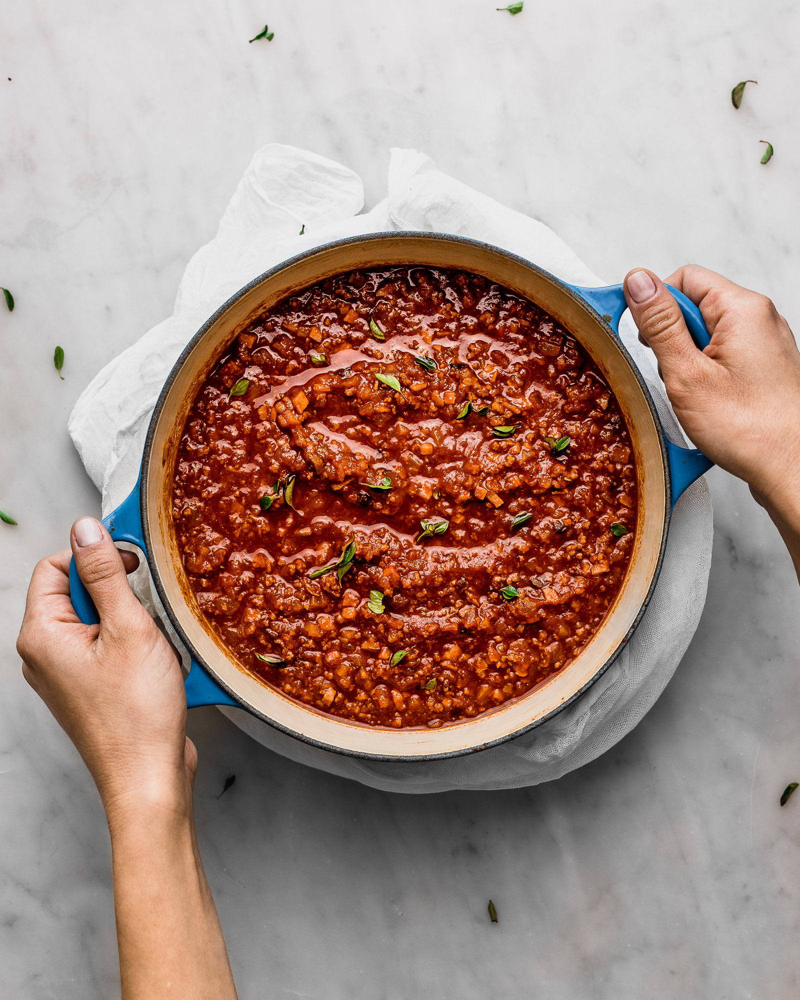

Bolognese Recipe

Description of the recipe
The bolognese ragu is a sauce that takes time to prepare, up to 4 hours if you want it to be perfect. Typical dish coming from the city of Bologna in Italy, it
is incredibly flavorfull and has a lot to offer to your tastebuds !
Increadibly simple to do, it is a perfect sauce to make if you are recieving family for lunch and you want to play it italian style.
It is very handy also, because you can make astronomous quantities. Feeding your whole family never made this simple !
Ingredients
- Onions
- Carrots
- Celeri
- Veal, Beef and Pork minced meat
- Tomato passata
- Tomato paste
- Tomato can
- Red wine, 1 mug
- Salt, pepper and that's it for the seasoning
Steps
- Put olive oil in the pot and toss in the onions
- After 5 minutes toss in the celeri and the carrots
- Wait for them to cook and then pour half of the red wine
- Put in the meat
- Wait for the juice to evaporate and then throw the last half of red wine
- Put in the tomato paste, and stire everything good
- Go for the passata and the can tomatoes
- Add a little bit of boiling water
- Wait and add water everytime the water has evaporated
- Do this for four hours and your done !